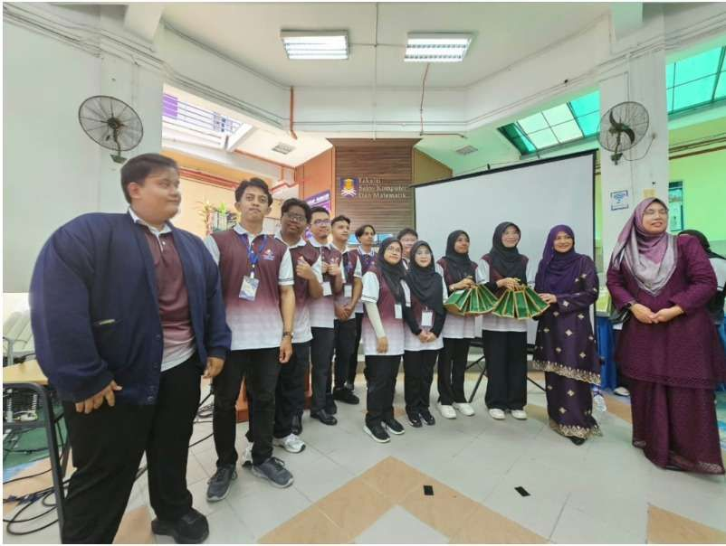

Hi, I'm Ahmad Ariffbillah
Specializing in |
Passionate Computer Science graduate specializing in Intelligent System Engineering (Big Data track). Eager to apply AI-driven solutions and cloud architecture (GCP) to address real-world challenges. Earned dean list award for every semester in Diploma and Bachelor's degree. Awarded with Vice Chancellor Award in Diploma and nominated for Vice Chancellor Award in Bachelor's degree.
Intelligent System Engineer Intern
Applying AI, Big Data & Cloud Architecture to Solve Real Problems
I am a Computer Science graduate with a Bachelor of Information Systems (Hons.) Intelligent System Engineering (Big Data track). I am actively seeking full-time opportunities where I can apply my skills in machine learning, artificial intelligence, and cloud engineering.
Through hands-on internships at Selangor Technical Skills Development Centre (STDC) and BusinessQuest.com, I have designed and deployed AI models, streamlined digital training onboarding system using GCP cloud native tools, and created an Apple trainee management system that leverages face recognition AI for verification purpose.
I made several achievements during my studies at UiTM. When I was pursuing my Diploma in Computer Science, I have been awarded with dean list award for every semester and received the prestigous Vice Chancellor award. After graduating with my Diploma in Computer Science, I pursued a Bachelor's degree in Information Systems (Hons.) Intelligent Systems Engineering. I continue to maintain a high level of academic excellence by consistently earning dean list award for every semester. I am now nominated for a Vice Chancellor Award once more.
Technical Expertise
Languages
Frameworks & AI
Specializations
Cloud & Tools
Selected AI & Deep Learning Projects
Phishing Website Classification using ML
Developed a machine learning prototype capable of classifying websites as phishing or legitimate with a high accuracy of 95.54%. Researched and analyzed features to identify malicious URLs and patterns.
AI-Based Document Scanning System
Contributed to system research and implementation of a layout-aware OCR/document parsing model using the Donut transformer. Converts raw scans into structured JSON information dynamically.
Apple Trainee Management System
Developed a face recognition-based biometric attendance system for Apple trainees. Built standard verification loops using pre-trained computer vision backbones to replace manual log sheets.
Student Dropout & Success Model
Developed a deep learning model to predict student dropout rates and academic success with a 73% classification accuracy. Useful for early intervention and analytics in institutional settings.
Digital Training Onboarding System
Built an onboarding platform integrated with Google Cloud Platform (GCP). Allows seamless registrations and program configurations leveraging Serverless architecture and Vertex AI tools.
Environmental Hazard Management System
Built a fuzzy logic predictor to analyze environmental factors and calculate severity indices for natural disasters, helping coordinate rescue and evaluation alerts.
Deepfake Detection Game (SULAM)
Designed and developed an interactive visual trivia game challenging players to distinguish between AI-generated fake media and authentic images/videos. Emphasizes security awareness.
Website Development & Maintenance
Built, deployed, and maintained custom front-end and back-end configurations for corporate client sites, focusing on responsiveness, loading speeds, and clean markup.
Education & Key Experience
Selangor Technical Skills Development Centre (STDC)
Intelligent System Engineering Intern
Contributed to building secure and serverless cloud solutions and biometric recognition applications.
- Digital Training Onboarding System: Developed a digital training onboarding program using GCP tools (Compute Engine, Cloud Functions, Cloud Storage, IAM, VPC Networking, Vertex AI) for automated course registration.
- Apple Trainee Management System: Implemented a facial recognition verification login framework using Python and SQL (myPHP) to to ensure true clock-ins for Apple trainees.
BusinessQuest.com Sdn. Bhd.
AI & Website Development Intern
Focused on the intersection of modern document analysis AI and custom front-end development/maintenance.
- AI Document Scanner: Conducted system research and fine-tuned a custom OCR parsing model using the Donut transformer to extract structural JSON text from scan batches.
- Web Maintenance: Maintained and updated responsive web codebases for corporate clients using HTML, CSS, and Notepad++.
Universiti Teknologi MARA (UiTM), Shah Alam
Bachelor of Information Systems (Hons.) Intelligent System Engineering
Currently pursuing specialized education in Intelligent Systems Engineering with a focus on Big Data architectures and cloud computing.
Universiti Teknologi MARA (UiTM), Cawangan Melaka
Diploma in Computer Science
Formed a strong foundation in core computer science subjects, database design, algorithms, and modular object-oriented programming.
Academic & Technical Certifications
Google Cloud
- Infrastructure Associate Cloud Engineer (Skill Badges)
- Data Associate Data Practitioner (Skill Badges)
- Generative AI Generative AI Leader (Skill Badges)
- Cloud Leader Cloud Digital Leader (Skill Badges)
My5G Ericsson
- 5G Core My5G Ericsson Badge for Fundamentals Module
- Digital Services My5G Ericsson Badge for 5G Enabled Digital Services, Data Module
- Tech Stack My5G Ericsson Badge for AI, Extended Reality, Cloud, Blockchain & Cybersecurity Module
Academic & AI Badges
- IoT Introduction to IoT — Cisco Academy
- DBMS Database Management System — Oracle Academy
- AI Assistant Gemini Certified University Student Certification
Awards
Malaysia International Enrichment Matching Fund (MIEMF) 2025
Delegation team from UIN Sjech M. Djamil Djambek Bukittinggi achieved outstanding success at the prestigious MIEMF 2025 international competition hosted at Universiti Teknologi MARA (UiTM), Malaysia from 9–15 December 2025.
Competing alongside teams from UiTM Malaysia and the Kalaignar Karunanidhi Institute of Technology (KIT) from India, our team designed and developed "UNMASKED", a pioneering AI Ethics and Deepfake Detection Awareness project aimed at educating the public about the ethical implications of artificial intelligence and fake media. Our innovation was awarded **Third Place** in the **AI Ethics Awareness Kit** category.
Read News Coverage (RRI Bukittinggi)
Get In Touch
Let's build something intelligent.
I am actively seeking full-time opportunities related to AI, Machine Learning, Data Science, or general IT fields. If you have an exciting opening, scholarship, or project to discuss, feel free to connect!